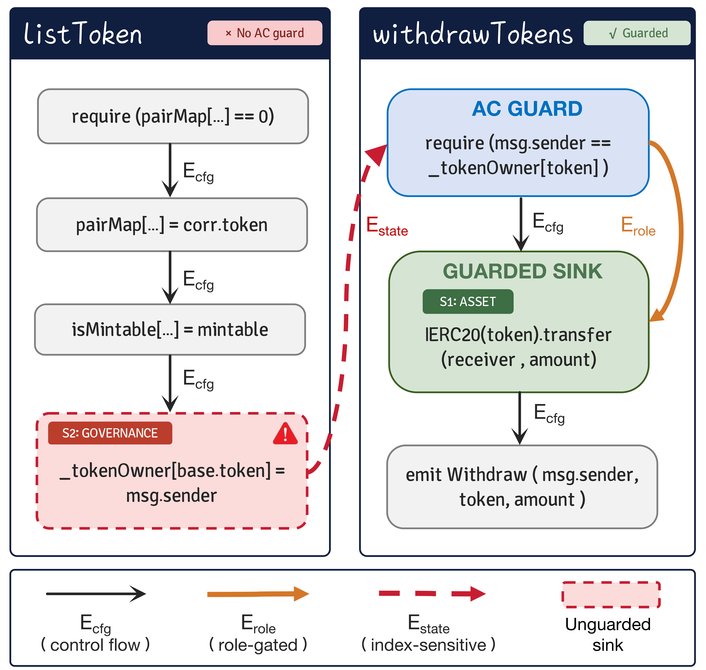
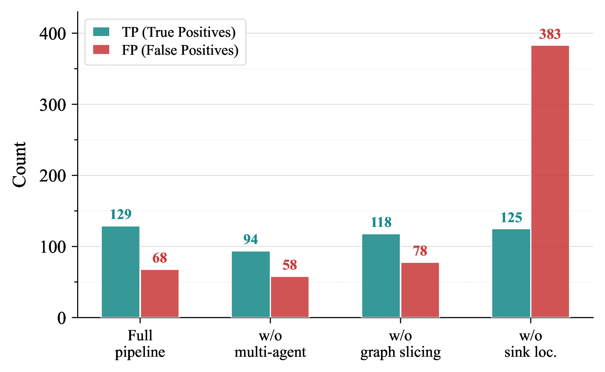

Smart contracts are immutable, self-executing programs deployed on blockchains that typically manage substantial financial assets, making them a prime target for attackers. While Access Control (AC) vulnerabilities constitute the leading cause of financial loss, identifying them is increasingly challenging as authorization logic spans multiple functions with shared state variables and diverse business rules. Existing detectors are heavily dependent on guard pattern matching or sender taint analysis, but these methods frequently prove ineffective in the context of DeFi protocols. The root cause of such vulnerabilities is rarely the absence of guard patterns, but rather the exploitable reachability of privileged operations under unintended policies. Tackling this fundamental issue requires evaluating two distinct criteria, namely identifying which operations carry privileged effects and determining whether any feasible path can reach them in violation of the authorization policy implied by the contract's own protection patterns. In this work, we propose ACLens, a multi-agent framework guided by program graphs to conduct the analysis in two dedicated phases. The first phase performs deterministic graph analysis to pinpoint critical sinks and delineate a compact evidence boundary around them. The second phase deploys three agents to reconstruct an execution trace reaching each sink, infer the intended authorization policy from intra-contract evidence, and determine whether the reconstructed trace violates the inferred policy. On a DeFi exploit benchmark of 46 validated projects and 97 vulnerable functions, ACLens reaches 83.5\% recall and 55.1\% F1, outperforming the strongest baseline (i.e., ACTaint) by 46.4 points in recall and 20.0 points in F1.
Abstract
1. Introduction
Decentralized finance (DeFi) protocols built on smart contracts now manage billions of dollars in total value locked [1]. Because these contracts are immutable once deployed, a vulnerability cannot be patched and exploitation leads to irreversible financial losses [1]. Among all vulnerability classes, access control (AC) defects are the most costly, arising when critical operations are executed without proper authorization. In 2024, access-control exploits accounted for 75\% of all crypto hacks, with roughly \$1.7 billion stolen [1]. The 2025 OWASP Smart Contract Top 10 ranks AC vulnerabilities as the number-one threat [1].
Unlike reentrancy or integer overflow, AC vulnerabilities depend on the developer's implicit intent rather than on language semantics. A public function that modifies the owner variable, for instance, is vulnerable only if the developer intended to restrict that operation. On CVE-style benchmarks where each flaw is confined to a single function, specialized tools perform reasonably well. AChecker [1] and ACTaint [1] achieve 80\% and 93.3\% recall, respectively. However, these benchmarks rarely mirror production DeFi contracts. This observation is further supported by our evaluation on a new DeFi benchmark under a strict function-level protocol (Section X), in which the best-performing baseline reaches only 37.1\% recall on confirmed exploits.
This performance gap indicates a structural limitation in existing detection methods. AC vulnerability detection begins by locating critical operations (e.g., external transfers, privileged state writes, and self-destruction), relying mostly on structural patterns. The more challenging task lies in determining whether critical operations actually lack adequate protection. Traditional tools address this challenge by verifying the presence of known guard patterns. Although some advanced systems [1] incorporate techniques such as guard pattern matching and sender taint analysis, they still validate primarily against predefined protection mechanisms. In production DeFi contracts, however, authorization logic is rarely confined to standard modifiers or recognizable patterns. It emerges from intra-contract state relationships that are distributed across multiple functions and shared state variables, making it only partially visible to pattern-based analysis.
LLM-based approaches have also been explored for AC detection [1]. Applying them effectively, however, requires overcoming two obstacles inherent to AC vulnerabilities. C1: Authorization logic is structurally indistinguishable in standard program representations. In conventional program graphs, guards that depend on the caller are encoded identically to ordinary business predicates, and all accesses to the same indexed state variable collapse into a single abstract location regardless of their index keys. As a result, no structural signal separates an authorization check from an arithmetic bound or a balance lookup. This absence undermines the validity of any analysis relying on such representations. Besides, providing the entire contract to an LLM obscures authorization signals amidst irrelevant code [1], whereas slicing along standard dependence edges fails to preserve cross-function state relationships. In both cases, the pivotal evidence necessary for determining AC vulnerabilities is lost. C2: Vulnerability is defined against an implicit policy specific to the contract. Certain common vulnerabilities, such as reentrancy and integer overflow, stem from violations of language-level semantics that can be defined independently of any specific contract. AC violations, by contrast, are meaningful only relative to an authorization policy that the developer rarely specifies explicitly. Traditional detectors reduce this ambiguity to closed-world pattern matching. LLMs can reason about open-ended policies, but without structured comparative evidence they cannot distinguish intentionally permissionless interfaces from accidentally unprotected ones.
Despite the semantic complexity of access control (AC) rules, their structural evidence can be identified through dependency relationships before any semantic interpretation is required. Building on this insight, we propose ACLens, a multi-agent framework for detecting AC vulnerabilities in smart contracts, guided by program graphs. Concretely, ACLens formulates AC detection as a two-phase process. In the first phase, Graph-Guided Structural Analysis leverages an Access Control Property Graph (ACPG) to identify critical sinks and extract a compact evidence boundary for each target function. In the second phase, Multi-Agent Security Reasoning decomposes the analysis across specialized agents: one reconstructs the execution trace leading to the sink, another infers the intended authorization policy from existing protection patterns in the contract, and a verifier determines whether the trace violates that policy. Rather than exposing each reasoning agent to the entire contract, ACLens uses dependency graphs to define a per-function evidence boundary prior to any semantic analysis. Our evaluation on a DeFi benchmark comprising 46 validated projects (Section X) shows that this decomposition achieves 83.5\% recall and 55.1\% F1, surpassing the strongest specialized baseline by 46.4 in recall and 20.0 in F1 score. In summary, this work makes the following contributions.
- [leftmargin=*,nosep]
- We propose ACLens, a multi-agent framework for AC vulnerability detection in smart contracts that combines graph-guided structural localization with multi-agent policy reasoning. To the best of our knowledge, this is the first work to leverage program graph analysis to delimit the evidence scope for each critical sink, thereby enabling more effective multi-agent reasoning for AC vulnerability detection.
- In ACLens, we design an Access Control Property Graph (ACPG) that extends standard code property graphs with caller-dependent guard semantics and cross-function state links, enabling precise sink identification and compact evidence extraction via backward slicing.
- We evaluate ACLens on a DeFi benchmark of 46 projects spanning six chains. Under a strict function-level protocol over confirmed exploit cases, ACLens achieves 83.5\% recall and 55.1\% F1, more than doubling the recall of the best-performing specialized baseline (37.1\%) while maintaining competitive precision.
2. Methodology
\label{sec:methodology}
Detecting AC vulnerabilities requires first locating the operations that carry privileged effects and delimiting the security-relevant context around them. It further requires determining whether any feasible execution reaches those operations in violation of the contract's implicit authorization policy. ACLens delegates these two tasks to structural analysis guided by the program graph and multi-agent security reasoning, respectively. By design, the first phase determines what each agent in the second phase is permitted to see, ensuring that semantic judgment is always grounded in structurally scoped evidence. Figure X presents the overall workflow.
Graph-Guided Structural Analysis (\SX) builds an Access Control Property Graph (ACPG) that captures caller-dependent guard semantics and cross-function state dependencies, and uses them to identify authorization-relevant sinks. Around each sink, relevance-guided slicing then extracts a Sink-Conditioned Execution Environment (SCEE) based on the sink set and graph topology.
Multi-Agent Security Reasoning (\SX) consists of trace reconstruction, policy inference, and compliance verification. The Trace agent reconstructs the sink-reaching execution trace for each sink. The Auditor infers the intended policy from code structure and graph annotations. The Verifier then aligns these two outputs to judge whether the reconstructed trace violates the inferred policy. The evaluation in \SX quantifies the benefit of this separation.

Figure 1: Overview of the ACLens framework. Phase 1 performs structural analysis guided by the program graph to construct the ACPG, identify critical sinks, and extract Sink-Conditioned Execution Environments (SCEEs). Phase 2 performs multi-agent security reasoning.
2.1 Graph-Guided Structural Analysis
\label{sec:structural}
Passing the full contract to phase two would obscure authorization logic among irrelevant code, while naive slicing on a standard dependency graph would discard the cross-function state flows that AC judgment depends on. Graph-guided structural analysis addresses both requirements through three steps: ACPG construction, critical sink identification, and relevance-guided context slicing.
We first construct a Code Property Graph (CPG) [1] from Slither's [1] parsing results. The CPG jointly encodes control flow, data dependence, and control dependence over program statements, allowing downstream analysis to simultaneously trace execution paths, data flows, and branching conditions within one structure.
For AC analysis, two aspects of a standard CPG remain implicit. First, the authorization semantics is implicit. For example, predicates that enforce authorization, such as the one in require(msg.sender == owner), are represented in the same way as ordinary predicates like amount > 0. Second, a standard CPG treats all accesses to the same mapping variable as equivalent, regardless of which key is used. It cannot distinguish whether two functions reading and writing balances operate on the same entry or on entirely different ones. This prevents the analysis from tracking how a state change in one function affects the data that another function reads or guards, which is essential for detecting cross-function AC vulnerabilities. These two gaps motivate the ACPG's extensions.
The first extension encodes guard semantics. A conditional check qualifies as an authorization guard\label{def:guard} for a downstream operation if its predicate depends on the caller's identity, whether directly or through transitive data flow, and if it dominates the operation in the control-flow graph, i.e., every path from the function entry to that operation passes through the check.
In Solidity, the primary on-chain sources of caller identity are msg.sender and tx.origin. Our implementation tracks transitive dependencies from these two primitives via Slither's data-flow analysis. Authorization guards take the form of inline require statements, if branches, or modifier bodies that encapsulate such checks. When both criteria are met, the ACPG records an $E_{role}$ edge from the guard to the protected operation, allowing later stages to directly query whether a given operation is protected by an authorization guard.
The second extension resolves cross-function state connections at the mapping-key level. Mapping variables in DeFi contracts serve as shared accounting structures across multiple principals, yet a standard CPG treats every access to the same mapping identically regardless of the index key used. AC analysis needs only to determine whether each access targets the caller's own entry or a different principal's. The ACPG answers this through a symbolic key attached to each mapping access, a tuple recording the provenance of each index expression. For instance, balances[msg.sender] carries the key $\langlesender\rangle$, while allowances[msg.sender][spender] with parameter spender carries $\langlesender,\;param\text{:spender}\rangle$.
When a symbolic key contains parameter references, the analysis resolves each by following interprocedural call edges ($E_{call}$) until a concrete origin (e.g., msg.sender) or a public entry point is reached. The analysis then aligns write and read keys for the same variable and compares their origins at each index level. Matching origins yield high confidence, distinct parameter sources yield medium, and unresolved locals yield low; incompatible origins (e.g., sender vs.\ a constant) produce no edge. The minimum confidence across positions scales the $E_{state}$ edge weight as $w = 0.9 \times c$ ($c \in \{1.0, 0.67, 0.33\}$), so balances[msg.sender] in one function connects at weight 0.9 to the same entry elsewhere while unrelated accesses remain disconnected. Figure X illustrates these connections on XBridge (\SX).
The resulting ACPG encodes the structural evidence that subsequent analysis builds on. Sink identification (\SX) queries these edges to locate control variables and determine whether each sink is guarded, while context slicing (\SX) uses the edge weights to extract code regions that preserve the security-relevant context for downstream reasoning.
Given the ACPG, the next step is to determine which operations in a contract require authorization. We call an operation a critical sink if an unauthorized execution would violate at least one contract-level security invariant. A security invariant here refers to a property the contract should maintain throughout normal operation, whose violation leads to irreversible security consequences.
\begin{definition}[Critical Sink] \label{def:sink} Given an ACPG $G_{AC}$, an operation node $s \in V$ is a critical sink if there exists a security invariant $I \in \{\textsc{Governance}, \textsc{Asset}, \textsc{Authorization}\}$ such that an unprivileged caller performing $s$ would violate $I$:
where $c_{\bot}$ models a caller that holds no privileged role in the contract, and $effect(s, c_{\bot})$ denotes the post-state that results from executing $s$ under caller $c_{\bot}$, assuming $s$ is reached regardless of any guards on the enclosing path. This identifies operations whose uncontrolled execution would be harmful; whether the guards currently in place enforce an adequate policy is assessed separately during policy inference (\SX). \end{definition}
Analyzing documented DeFi incidents [1], we classify the damage from uncontrolled execution into three security invariants. \textsc{Governance} covers operations that alter the contract's own access policy. \textsc{Asset} covers external calls and value transfers that cause direct financial loss. \textsc{Authorization} covers writes to shared state affecting other users' funds or permissions, pervasive in DeFi's mapping-based accounting but largely unaddressed by existing tools [1]. We instantiate these invariants into six sink categories based on the Solidity operations that can violate them (Table X).
S1, S3, S4, and S5 correspond to operations recognized in prior AC analysis [1]. S2 and S6 are enabled by the ACPG extensions from \SX. For S2, guard edges ($E_{role}$) provide a structural alternative to heuristic name matching [1]. A state variable read at the source of a guard edge is governance-relevant, so writes to it are classified as S2 sinks. For S6, key-resolved state edges ($E_{state}$) distinguish whether a mapping write targets the caller's own entry or another user's, capturing cross-user mutations that standard representations lack the precision to detect [1].
Before enumeration, we exclude entry points whose access is fixed by the execution model or limited to caller-local effects, such as constructors, fallbacks, and standard inherited token wrappers. After enumeration, we query the ACPG to determine whether a guard dominates each sink, provisionally marking it as unguarded, guarded, or excluded. Whether existing guards enforce the intended policy is assessed in \SX.
Classical program slicing [1] on a standard CPG does not distinguish authorization guards from ordinary predicates, nor does it track state flows at the mapping key level. Slices derived from such a graph may therefore omit the cross-function guard conditions and index-sensitive state connections that AC judgment requires. Because the ACPG already encodes these relationships as typed, weighted edges (\SX), we define a relevance-guided slicing procedure over this structure.
For each function $f$, let $\mathcal{S}_f \subseteq \mathcal{S}_{crit}$ denote the critical sinks within $f$ identified in \SX. We extract a Sink-Conditioned Execution Environment (SCEE) around each sink by propagating relevance over the dependency edge set $E_{dep} = \{e \in E \mid w(e) > 0\}$. This set retains all ACPG edges that carry dependency semantics, excluding structural edges with zero weight (control-flow and post-dominator).
Edge weights reflect how directly each edge type encodes authorization semantics. Guard and modifier edges carry the highest weight ($w{=}1.0$) as they represent explicit permission checks. State edges rank second, scaled by the key alignment confidence from \SX. Other dependency edges carry lower weights proportional to their indirect contribution. We formulate the slicing as a maximum product path problem on a priority queue. Each sink starts with relevance 1.0, and relevance decays multiplicatively along edges. The optimal relevance of a node $v$ satisfies
with base case $rel(s) = 1$ for all $s \in \mathcal{S}_f$. Here $\alpha = 0.85$ is the per-hop decay factor, and $\hat{w}(v,u) = \max_{e \in par(v,u)} w(e)$ selects the highest weight among parallel edges connecting $v$ and $u$ in the multigraph. The first term propagates relevance backward from sinks along dependency edges, collecting predecessor nodes that supply AC context. The second term extends propagation forward along state edges, because whether a state write constitutes a vulnerability depends in part on how downstream code reads or guards that variable. Nodes whose relevance falls below a threshold $\tau = 0.05$ are pruned; the resulting SCEE comprises all surviving nodes. Algorithm X gives the complete procedure.
\algrenewcommand{\algorithmiccomment}[1]{\hfill// #1} \begin{algorithm}[t] \caption{Relevance-Guided Context Slicing} \label{alg:slice} \begin{algorithmic}[1] \Statex Input: ACPG $G_{AC}{=}(V,E)$, sinks $\mathcal{S}_f$ of function $f$, decay $\alpha$, threshold $\tau$ \Statex Output: sink-conditioned execution environment $SCEE_f$ \Statex \hspace{2.5em}// $\textit{par(v,u)$: parallel edges between $v$ and $u$ in the multigraph} \State $E_{dep} \leftarrow \{e \in E \mid w(e) > 0\}$ \Comment{dependency edges only} \State $rel[v] \leftarrow 0$ for all $v \in V$ \State $H \leftarrow$ empty priority queue; $\mathcal{R} \leftarrow \emptyset$ \For{each sink $s \in \mathcal{S}_f$} \State $rel[s] \leftarrow 1.0$; push $(1.0, s)$ into $H$ \EndFor \While{$H \neq \emptyset$} \State $(r_u, u) \leftarrow \textsc{ExtractMax}(H)$ \If{$r_u < rel[u]$} \State continue \Comment{superseded entry} \EndIf \State $\mathcal{R} \leftarrow \mathcal{R} \cup \{u\}$ \For{each $(v, u) \in E_{dep}$} \Comment{backward: predecessors} \State $r_v \leftarrow r_u \cdot \max_{e \in par(v,u)} w(e) \cdot \alpha$ \If{$r_v \geq \tau$ and $r_v > rel[v]$} \State $rel[v] \leftarrow r_v$; push $(r_v, v)$ into $H$ \EndIf \EndFor \For{each $(u, v) \in E_{state}$} \Comment{forward: state readers} \State $r_v \leftarrow r_u \cdot w(u,v) \cdot \alpha$ \If{$r_v \geq \tau$ and $r_v > rel[v]$} \State $rel[v] \leftarrow r_v$; push $(r_v, v)$ into $H$ \EndIf \EndFor \EndWhile \State \Return $\textsc{BuildSCEE}(\mathcal{R})$ \end{algorithmic} \end{algorithm}
The algorithm follows Dijkstra-style relaxation on a max-product semiring, computing optimal relevance in $O((|V|{+}|E|)\log|V|)$ time. With $\alpha{=}0.85$ and $\tau{=}0.05$, a path of weight-1.0 edges (guard, modifier, or role edges) retains relevance above $\tau$ for up to 18 hops ($0.85^{18}{\approx}0.054$), while a path of call edges (weight 0.5) drops below $\tau$ at hop 4 ($0.425^{4}{\approx}0.033$). The weight assignment biases the SCEE toward nodes connected to the sink through edges that encode permission semantics, while nodes reachable only via low-weight indirect paths are excluded.
Running example.\ On XBridge (Figure X), ACPG construction links the \_tokenOwner write in listToken to the downstream read in withdrawTokens. Sink identification marks this write as S2 (\textsc{Governance}) and the transfer in withdrawTokens as S1 (\textsc{Asset}). Guard verification classifies withdrawTokens as \textsc{Guarded} and listToken as \textsc{Unguarded}. Starting from these sinks, relevance-guided slicing retains the full state chain from the \_tokenOwner write to its guard read, while auxiliary operations with no dependency path to either sink fall below $\tau$ and are excluded.

Figure 2: Access Control Property Graph (ACPG) capturing cross-function dependencies and mapping-key levels.
2.2 Multi-Agent Security Reasoning
\label{sec:agents}
Once phase one fixes the evidence boundary, the analysis must determine whether each critical operation is adequately protected under an authorization policy that the contract never explicitly states. Phase two assigns this judgment to three agents with separated responsibilities. The Trace Reconstructor ($A_{trace}$) reconstructs the execution trace reaching each sink within the SCEE. The Auditor ($A_{audit}$) infers the intended authorization policy for the target function. The Verifier ($A_{verify}$) judges whether the reconstructed trace violates the inferred policy and whether its effect extends beyond the caller's own state. This separation prevents a single model from anchoring on its initial interpretation and propagating bias into downstream judgments. Section X quantifies the effect.
In Solidity, authorization is enforced primarily through modifiers attached to the function signature and through require statements placed before the function body's first branch [1]. Prior AC detectors also target these two mechanisms [1]. Both mechanisms execute at function entry and therefore dominate every subsequent node in the control-flow graph. If no guard exists at function entry, every path from entry to the sink is equally unprotected. This structural property distinguishes AC vulnerabilities from reentrancy [1] or transaction ordering dependence [1], where exploitable behavior emerges only under specific execution interleavings. Because the absence of an entry-level guard is path-independent, a single verified trace that reaches the sink without encountering an adequate guard constitutes a sufficient vulnerability witness. $A_{trace}$ therefore reconstructs, for each critical sink identified in \SX, exactly one execution trace from the function's externally reachable entry point to the sink within the SCEE (\SX formalizes the sufficiency condition in eq. (X)).
The reconstruction follows a five-step protocol (Figure X) that walks forward from function entry to the target sink, accumulating path conditions and tracking how the caller's identity propagates into guards and sink operands. The protocol concludes with a feasibility check confirming that the accumulated path condition is satisfiable. Each step in the output trace is anchored to a specific code fragment in the SCEE. A deterministic validator then confirms that each referenced fragment exists in the SCEE, that consecutive steps are connected in the control-flow graph, and that the overall path is reachable from the entry point. Traces that fail any check are returned to $A_{trace}$ for reconstruction, with up to two retries. Because the SCEE has already narrowed the reasoning scope, 89.1\% of sinks pass validation on the first attempt.
The Auditor infers an authorization policy $\mathcal{P}_f^* = (\mathcal{A}_f, \Phi_f)$ for each function $f$ that contains at least one sink identified in \SX, where $\mathcal{A}_f \in \{Public, Owner, Role, DAO\}$ specifies the required caller class and $\Phi_f$ lists the state preconditions that must hold before execution. The granularity is per function rather than per sink, because Solidity guards are enforced at function entry (\SX) and all sinks within the same function therefore share the same authorization boundary. Within a single contract, developers typically protect operations with similar security implications in a similar way. Deviations from such recurring patterns have been shown to be a reliable signal for latent defects in prior work on inconsistency-based bug detection [1], and SPCon [1] confirmed this regularity for access control in smart contracts.
To exploit this regularity, $A_{audit}$ compares the target function against structurally similar peer functions from the same contract. It receives four inputs (Figure X): the target function's source, contract-level context (state variable declarations and modifier definitions), a ranked set of peers, and the graph annotations produced by phase one (per-sink guard status, control-variable alerts, and cross-user write flags from \SX). Peers are selected based on structural overlap that the ACPG makes observable in three forms: (1) shared writes to variables in $\mathcal{V}_{crit}$ (sink operands $\cup$ control variables from \SX), (2) sinks classified under the same security invariant (Table X), and (3) shared modifiers or guard predicates referencing the same role variable. Candidates with more overlapping signals rank higher. When two or more top-ranked peers enforce caller identity guards while the target lacks equivalent protection, the asymmetry constitutes evidence of a missing restriction rather than a deliberate design choice. Conversely, when all comparable peers are uniformly permissionless or scoped to the caller's own state, the target is presumed open by design. If fewer than two peers are available or their patterns conflict, the Auditor lowers its confidence and relies primarily on graph annotations as supplementary evidence.
Given the traces from $A_{trace}$, the inferred policy from $A_{audit}$, and the contract context, the Verifier determines their alignment. For a given sink $s$ with locally validated trace set $\mathcal{T}_s$ and inferred policy $\mathcal{P}^*_f$, we write $\mathsf{NonLocal}(T)$ for traces whose effects are not confined to caller-local state. The positive judgment is expressed in eq. (X).
where $T \not\models \mathcal{P}_f^*$ means that the trace violates the inferred caller class or state preconditions for $f$. $\mathsf{NonLocal}(T)$ holds when the trace affects shared or protocol-level state rather than only caller-local entries. This includes writes to governance and configuration variables, to aggregate accounting state, to mapping entries whose effective principal is not bound to msg.sender or to a parameter already constrained to equal msg.sender, and external asset transfers directed to recipients not bound to the caller. The second conjunct ensures that ACLens does not flag caller-only self-service behavior as a vulnerability. A single verified violating trace suffices for a positive finding; exhausting remaining branches is unnecessary. When neither condition triggers, $A_{verify}$ conservatively outputs \textsc{Unknown}. Constraining the Verifier to trace-policy alignment also prevents it from re-inferring the policy or hypothesizing attack scenarios unsupported by its inputs. Figure X excerpts the core instructions.
Running example.\ On XBridge, the Auditor notes that withdraw\-Tokens guards writes to \_token\-Owner with a caller identity check, and infers the same policy for list\-Token ($\mathcal{A}_f = Owner$). The reconstructed trace reaches the \_token\-Owner overwrite without any such check. Since \_token\-Owner also governs fund withdrawal in withdraw\-Tokens, the Verifier confirms both conjuncts of eq. (X) and reports \textsc{Vulnerable}.
3. Evaluation
Experimental Setup & Benchmarks
\label{sec:setup}
All LLM agents return JSON-formatted outputs. We set temperature to 0 and fix the random seed to 42, following standard practice in LLM-based vulnerability detection [1]. Each benchmark project is processed end-to-end without manual intervention. Under these settings the pipeline produces identical outputs for identical inputs. All experiments ran on a MacBook Pro with Apple M3 Max.
Metrics. Following ACTaint [1] and AChecker [1], we report TP, FP, FN, Recall $R$, and F1. We adopt a strict function-level evaluation protocol. For function-level evaluation on the DeFi set, a reported function counts as TP only when it independently exposes an exploitable root cause consistent with the incident. Functions that do not meet this criterion count as FP, and unmatched benchmark functions count as FN.
Our evaluation uses two complementary benchmarks: CVE, the 15-contract CVE dataset widely adopted in prior work [1], and DeFi, a benchmark we construct from confirmed on-chain DeFi AC exploits from 2017 to 2024. CVE covers classic single-function patterns on which existing tools already achieve high recall (ACTaint: 93.3\%). The DeFi dataset targets production DeFi contracts with cross-function authorization logic, where AC exploits cause the largest share of financial losses [1] yet remain largely undetected.
DeFi. We screen all incidents in DeFiHackLabs [1] through 2024 and retain those whose root cause is an AC vulnerability and whose source code is verified on-chain. This yields 54 confirmed exploits across six chains, covering 750 contract, library, and interface definitions totaling 85.6 KLoC. We then exclude 8 cases that are not genuine AC flaws, such as Merkle-guarded mints and intentionally permissionless routers. The remaining set contains 46 validated projects.
To establish function-level ground truth, two researchers with over three years of smart contract auditing experience independently reviewed each project. For every case they traced the on-chain exploit transaction, identified the root-cause function(s), and annotated all functions whose unguarded state independently enables the exploit. Disagreements were resolved through joint re-examination of exploit traces and contract state transitions, producing a final set of 97 vulnerable functions across the dataset.
RQ1: Detection Effectiveness
We first evaluate ACLens on CVE datasets and our constructed DeFi benchmark against state-of-the-art baselines. ACLens detects 81 of the 97 vulnerable functions on the DeFi dataset.
| Method | TP | FP | FN | Precision (%) | Recall (%) | F1 (%) |
|---|---|---|---|---|---|---|
| Slither | 8 | 22 | 89 | 26.7 | 8.2 | 12.6 |
| Mythril | 0 | 0 | 97 | - | 0.0 | - |
| SPCon | 1 | 0 | 96 | 100.0 | 1.0 | 2.0 |
| AChecker | 0 | 0 | 97 | - | 0.0 | - |
| GPTLens | 18 | 43 | 79 | 29.5 | 18.6 | 22.8 |
| ACTaint | 36 | 72 | 61 | 33.3 | 37.1 | 35.1 |
| ACLens | 81 | 116 | 16 | 41.1 | 83.5 | 55.1 |
Table 1: Detection performance on the DeFi dataset.
RQ2: Phase-Two Backbone Sensitivity
We examine whether detection performance remains stable when the LLM backbone changes. We test with GPT-4o, GPT-4o-mini, and DeepSeek-R1.
| Tool | Model | TP | FP | Precision (%) | Recall (%) |
|---|---|---|---|---|---|
| ACLens | GPT-4o | 81 | 116 | 41.1 | 83.5 |
| ACLens | GPT-4o-mini | 79 | 119 | 39.9 | 81.4 |
| ACLens | DeepSeek-R1 | 80 | 115 | 41.0 | 82.5 |
| ACTaint | GPT-4o | 36 | 72 | 33.3 | 37.1 |
| ACTaint | GPT-4o-mini | 42 | 427 | 9.0 | 43.3 |
| ACTaint | DeepSeek-R1 | 39 | 118 | 24.8 | 40.2 |
Table 2: Performance comparison across different LLM backbones.
RQ3: Phase Contribution (Ablation Study)
We build three ablation variants and evaluate them on the DeFi dataset with GPT-4o to understand the contribution of multi-agent reasoning, graph slicing, and sink identification.

Figure 3: TP and FP counts in the ablation study.
| Configuration | TP | FP | FN | Precision (%) | Recall (%) | F1 (%) |
|---|---|---|---|---|---|---|
| Full two-phase system | 81 | 116 | 16 | 41.1 | 83.5 | 55.1 |
| w/o multi-agent | 65 | 87 | 32 | 42.8 | 67.0 | 52.2 |
| w/o graph slicing | 77 | 119 | 20 | 39.3 | 79.4 | 52.6 |
| w/o sink identification | 81 | 429 | 16 | 15.9 | 83.5 | 26.7 |
Table 3: Performance comparison in the ablation study.
RQ4: Scoping Efficiency and Cost
We measure how graph-guided slicing changes the input that reaches phase two. Across all functions in the DeFi dataset projects, SCEEs average 92 whitespace tokens per function, versus 6,333 tokens for the full contract source.